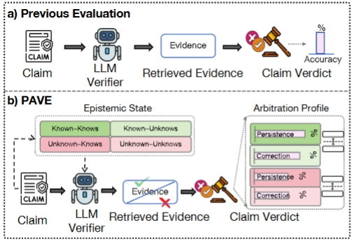
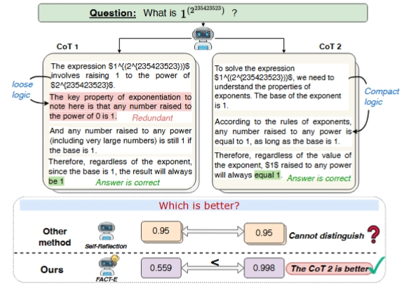
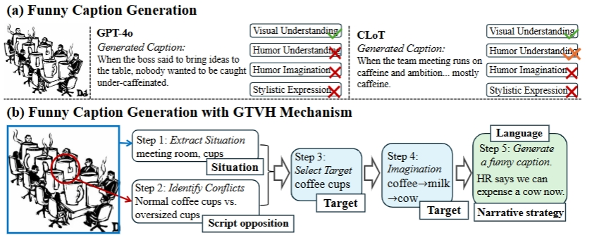
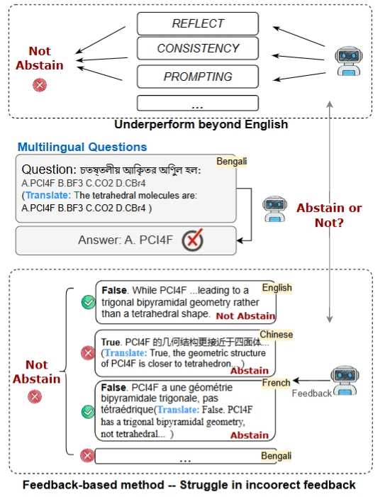
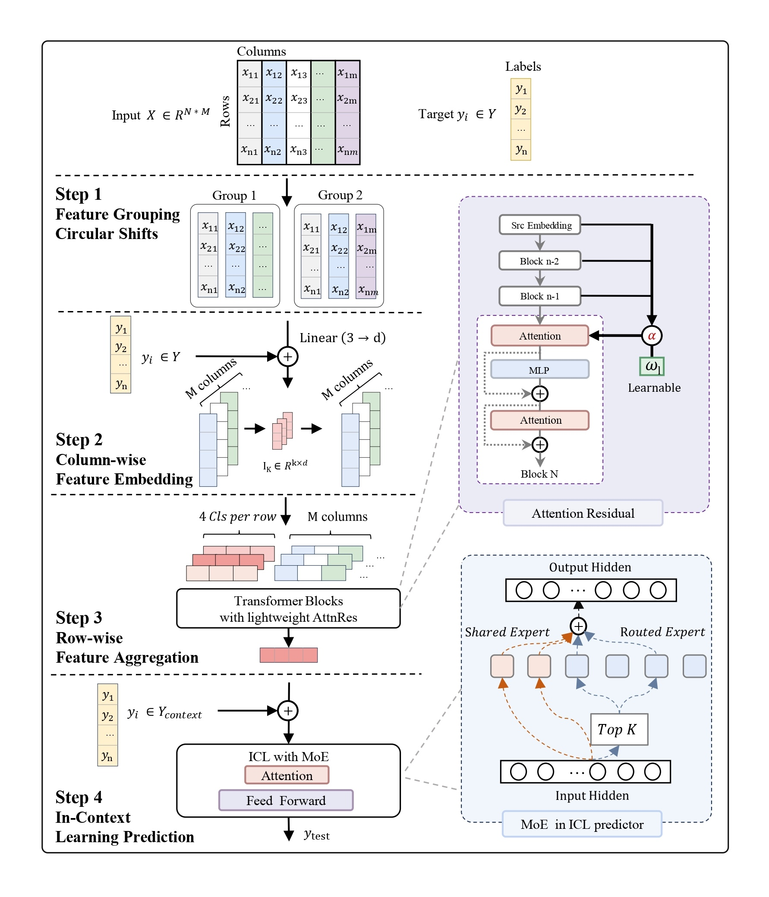

News
-
2026.09
The Xiaomi-TabLDM technical report is now available on arXiv 🚀Xiaomi-TabLDM extends the foundation-model paradigm to tabular data through large-scale synthetic pretraining and in-context learning.
-
2026.08
PAVE is accepted to EMNLP 2026 🎉PAVE studies how LLM verifiers arbitrate between internal priors and retrieved evidence under conflict in RAG-based fact-checking.
-
2026.07
Joined Xiaomi through the Top Talent Program as an algorithm research intern 🌟Working on tabular foundation models, with a focus on synthetic pretraining and scalable data priors.
-
2026.07
FACT-E is accepted to ACL 2026 🎉FACT-E evaluates chain-of-thought faithfulness through causality-inspired perturbations and dependency estimation.
-
2026.02
HOMER is accepted to ICLR 2026 🎉HOMER introduces a multi-role LLM framework for humor generation with conflicting-script reasoning and retrieval-augmented imagination.
-
2025.12
Our work on explainable ethical assessment appears at IJCNLP-AACL 2025 🎉The work improves explainable ethical judgment by reasoning over conflicting social norms behind human behaviors.
-
2025.07
CausalAbstain is accepted to ACL 2025 🎉CausalAbstain uses causal reasoning to help multilingual LLMs recognize knowledge boundaries and make more reliable abstention decisions.
Research Interests
- Trustworthy & Reliable LLMs: faithful reasoning, uncertainty-aware decision making, causal analysis, and reliability evaluation
- Evidence-Grounded Language Models: fact-checking, retrieval-augmented generation, and structured / graph-based retrieval
- LLM Agents & Multi-Agent Systems: reliable agentic reasoning, collaboration, and coordination for complex tasks
Selected Research

Diagnosing LLM Arbitration Behavior over Pre-evidence Epistemic States in RAG-based Fact-Checking
PAVE studies the reliability of LLM-based fact-checking under prior-context discrepancy and provides a controlled diagnostic framework for evaluating evidence utilization across different epistemic states.

FACT-E: Causality-Inspired Evaluation for Trustworthy Chain-of-Thought Reasoning
FACT-E evaluates the faithfulness of chain-of-thought reasoning through controlled perturbations and causality-inspired dependence estimation, identifying reasoning chains that appear plausible but contain unreliable intermediate steps.

On the Wings of Imagination: Conflicting Script-based Multi-role Framework for Humor Caption Generation
HOMER is a multi-role LLM framework for humor caption generation that combines conflicting-script reasoning, retrieval-augmented hierarchical imagination, and collaborative generation.

CausalAbstain: Enhancing Multilingual LLMs with Causal Reasoning for Trustworthy Abstention
CausalAbstain improves trustworthy abstention in multilingual LLMs by modeling feedback selection from a causal perspective, helping models recognize knowledge boundaries and avoid unreliable answers.
Publications
-
FACT-E: Causality-Inspired Evaluation for Trustworthy Chain-of-Thought Reasoning
-
Diagnosing LLM Arbitration Behavior over Pre-evidence Epistemic States in RAG-based Fact-Checking
-
REFLEX: Self-Refining Explainable Fact-Checking via Verdict-Anchored Style Control
-
On the Wings of Imagination: Conflicting Script-based Multi-role Framework for Humor Caption Generation
-
CausalAbstain: Enhancing Multilingual LLMs with Causal Reasoning for Trustworthy Abstention
-
SHARP: Unlocking Interactive Hallucination via Stance Transfer in Role-Playing LLMs
-
Explainable Ethical Assessment on Human Behaviors by Generating Conflicting Social Norms
Technical Report

Xiaomi-TabLDM: A Tabular Foundation Model Technical Report
Xiaomi-TabLDM is a general-purpose tabular foundation model for classification and regression via in-context learning. Pretrained on large-scale synthetic data generated from structural causal models, it explores scalable synthetic priors, efficient model scaling, and test-time scaling for strong cross-dataset generalization. Xiaomi-TabLDM ranks 1st on OpenML-CTR23 regression and 2nd on regression across TALENT, TabArena, and BCCO.
Contact
- Email: 23483628@life.hkbu.edu.hk
- GitHub: github.com/peachch
- Google Scholar: Yuxi Sun